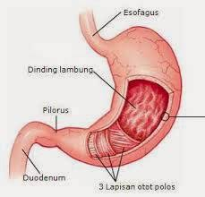

Lambung
Lambung merupakan saluran pencernaan makanan yang melebar seperti kantung, terletak di bagian atas rongga perut sebelah kiri, dan sebagian tertutup oleh hati dan limpa. Makanan yang ditelan terkumpul dalam lambung dan bercampur dengan getah lambung, sehingga makanan menjadi encer seperti bubur. Jalan keluar lambung tertutup rapat karena tebalnya lapisan otot lingkar yang sewaktu-waktu terbuka untuk melewatkan bubur makanan sedikit demi sedikit ke dalam usus halus

Lambung terdiri atas empat bagian, yaitu bagian kardiak, fundus, badan lambung, dan pilorus. Kardiak berdekatan dengan hati dan berhubungan dengan kerongkongan. Pilorus berhubungan langsung dengan usus dua belas jari. Di bagian ujung kardiak terdapat klep atau spingter yang disebut spingter esofageal, sedangkan di ujung pilorus terdapat spingter pilorus. Spingter esofageal berfungsi untuk menjaga makanan agar tetap di lambung dan hanya akan terbuka pada saat makanan masuk atau pada saat muntah.
Dinding lambung terdiri atas otot-otot yang tersusun melingkar, memanjang, dan menyerong yang menyebabkan lambung berkontraksi. Dinding lambung mengandung sel-sel kelenjar yang berfungsi menghasilkan getah lambung. Makanan yang masuk ke dalam lambung tersimpan selama 2 – 5 jam. Selama makanan ada di dalam lambung, makanan dicerna secara kimiawi dan bercampur dengan getah lambung. Proses pencampuran tersebut dipengaruhi oleh gerak peristaltik.
Getah lambung adalah campuran zat-zat kimia yang sebagian besar terdiri atas air, asam lambung ( HCl), serta enzim pepsin, renin, dan lipase. Getah lambung bersifat asam karena mengandung banyak asam lambung. Asam lambung berfungsi untuk membunuh kuman penyakit atau bakteri yang masuk bersama makanan, mengubah sifat protein, dan mengaktifkan pepsinogen menjadi pepsin.
Pepsin berfungsi memecah protein menjadi pepton dan proteosa. Enzim renin berfungsi menggumpalkan protein susu (kasein) yang terdapat dalam susu. Lipase adalah enzim yang menghidrolisis trigliserida menjadi asam lemak dan gliserol. Dinding lambung juga menghasilkan hormon gastrin yang berfungsi untuk pengeluaran ( sekresi) getah lambung.
Makanan dicerna oleh otot lambung dan enzim sehingga makanan menjadi lembut seperi bubur dan disebut kim. Otot pilorus yang membentuk klep akan mengatur keluarnya kim sedikit demi sedikit dari lambung ke duodenum. Otot pilorus yang mengarah ke lambung akan mengendur jika tersentuh kim yang bersifat asam, sebaliknya otot pilorus yang mengarah ke duodenum akan mengerut jika tersentuh kim.